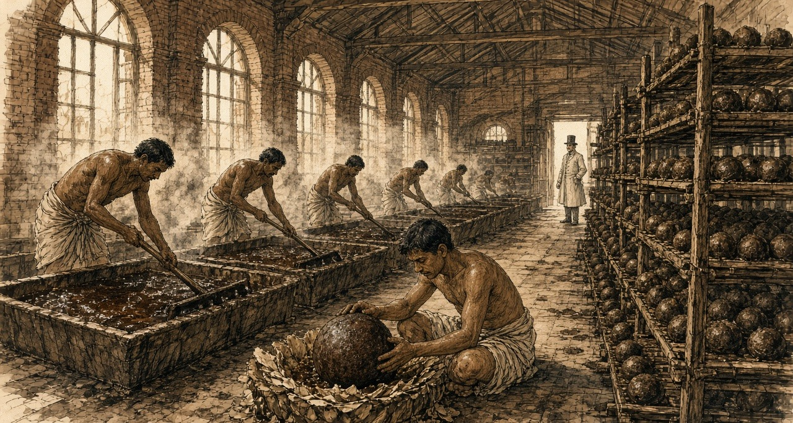
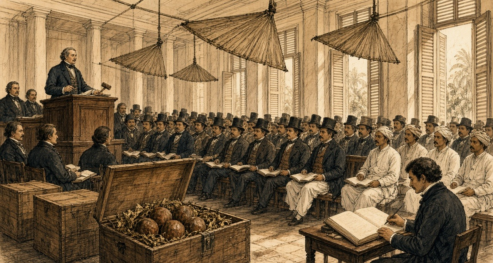
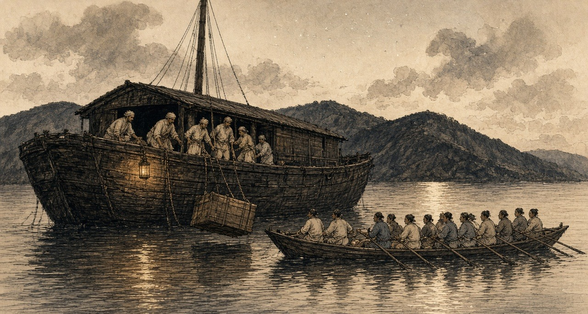
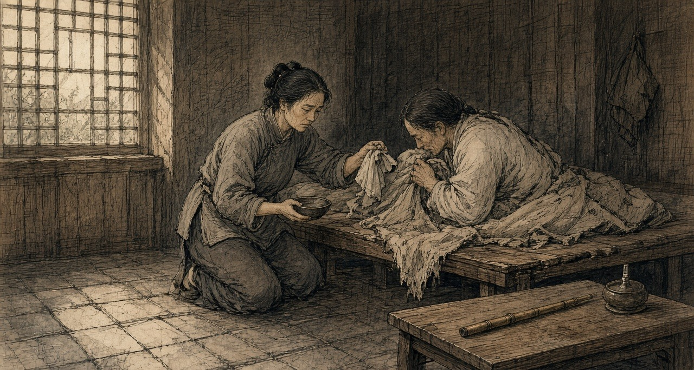
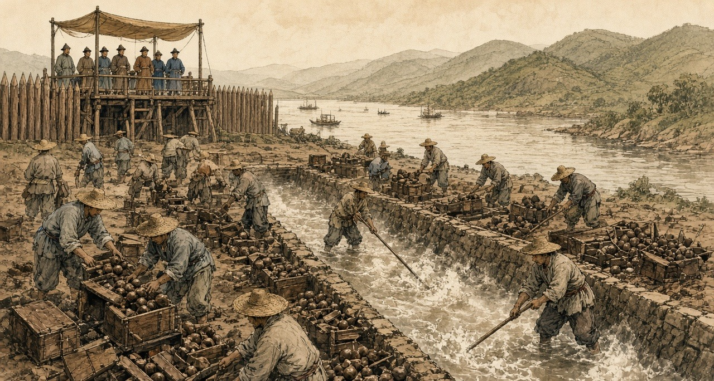

Chapter 1
Opium Auction
Saran and Patna in Bihar, the Calcutta sale, the Lintin anchorage, and Canton
The money came before the seed. In the districts of Bihar and Benares, a cultivator who agreed to grow poppy for the East India Company was handed cash in the autumn, months before anything green showed in his field, and from that day the crop had an owner and the owner was not him. The Company called the payment an advance. Rolf Bauer, who spent years in the records of the Opium Department, found that the advance arrived when the landlord's rent fell due, and that the whole sum was frequently paid by the Department straight to the landlord. The cultivator's household got a receipt and a debt.
The arrangement had a long paper history behind it. Company servants at Patna had squeezed the opium trade for themselves after the Company took the revenue rights of Bengal, Bihar, and Orissa in 1765. In 1773, under Warren Hastings, the Calcutta government turned that private grip into a monopoly and farmed it out to a single contractor, who delivered opium at a fixed price for sale in Calcutta. The contract became a thing to be traded. In 1781 Hastings gave it to Stephen Sulivan, son of the Company's chairman, for four years, and young Sulivan sold it on to John Benn for 350,000 rupees a year, and Benn sold it again. The 11th Article of the charges against Hastings at his impeachment was about that contract. By the 1790s the contractors' opium had grown so bad that buyers abroad were turning it away, and in 1797 the Company dropped them. Two Opium Agents, salaried Company officers, took over: one for Bihar, based at Patna, and one for Benares, whose factory stood at Ghazipur on the Ganges. Regulation VI of 1799 made it illegal to grow poppy for anyone else.
Bihar had grown opium long before any Company servant arrived. The Company brought the counting.
* * *
A village in Saran district, Bihar, the cold weather of 1836
Kartik, 1836. Saran district village.
Ram-Ram. I this my father's left-behind bahi back-side blank pages on writing am, because gomastah babu says man his own account himself keep should, only zamindar's book on not. My writing good is-not, but name and account write can, and my son me-after this read-will.
Cutting time, gomastah babu came. Headman's house in-front cot on sat-down, knee on paper opened. All paper only is with them. One-by-one called. My name also — Bhola, Ramdin's son, two bighas. But those two bighas mine are-not, zamindar's are. My father's father ploughed-had, his name also zamindar's book in is, and rent book small becomes-not.
Silver count-having my hand in gave. Warm is, box from, sun-heat in. One breath for, I rich seemed. After-that, zamindar's man cot behind-from came-out, hand forward did, and my palm's silver his hand into went-already — whole advance, rent for. Gomastah something wrote, zamindar's man something wrote. I thumb ink in put. House-to walked then hand empty, thumb black, and field now father's saying-by also mine is-not, because now Sarkar's book in also written-went.
Wife asked, how much? I thumb showed. She nothing spoke. Inside went, pots banged-down, and little-one crying started.
We sowed. Field-to water needed every few days, tank from, lever by — my back and brother's back, up-down, up-down, bucket and rope hands cut. Neighbour wheat sowed. His wheat knee-full is when our poppy small is, and he laughed, spoke, Bhola, your field Company's garden become-went.
Phagun in, flowers come white, tank edge all white, wedding like, after-that drop-went, and pods stand-up green and hard, hen's egg size. Now work starts. Evening at, cold in, knife take-having go-out. Small crooked blades, three-four tie-having, pod's four-sides around pull, too deep not. Too deep then juice ground on flows-away, useless. Less deep then nothing comes. My son also, eleven years of, him-to also knife gave, first night finger cut-took, sucked-took, cried not, because mother watching is.
Juice comes-out white, pearl like hangs. Night-full lies-staying, next day sun-heat in cook-having brown and sticky, evening at we scrape, every pod. Field long is, evening at also neck on load. Smell everything into enters. Sour, heavy, cowshed behind like, and underneath sweet, noon by head heavy. Stuff scraper and fingers-to sticks, hand lines in black dries. Wife night at ash with hands rubs, still morning at roti on smell comes.
After-that, gomastah's men field in walking come. Looked. Anything weighed not. Pods looked, among-themselves talk did, one a number said, other wrote. Bhola's two bighas from so-many seers. Guess-by made. And I know-went, Ram, that number look-having know-went — my field that number give cannot, even-if every pod two times blood bleeds.
That night slept not. Cot on lying stayed, tank across jackals heard, account calculated. What number they wrote. Advance, which zamindar to gone-already. Sarkar's rate per seer, what babu said, and wet for minus, opium bad be then minus, minus, minus. Short fell then say embezzled-did. Bhola hid, Bhola bania-to sold-gave. After-that, court. My brother's wife's uncle-to Chhapra in court took-went. Cow took-went. Cot also. Ramdin's son court goes-not. This I dark in myself-to said, mantra like.
Wife came, me-near sat. Spoke, next village in cow-dung put-they, tank mud, jaggery, heavy making for. I said, and factory? They test. Factory in to-them known is. She spoke, then what? I said, then more force-with scrape-will.
We more force-with scraped. Again-again those pods cut, every evening, until nothing gave and all on scars fell, smallpox after old-man's face like. Son's fingers cut, healed, again cut. One pot is, clay of, heavy, top black, inside jaggery like brown, and I it head on take-having kothi weighing-for went, whole road praying stayed, Ram, scale-to mercy do let.
Scale mercy did-not. Babu wrote-gave. Next year, they said, better do-will. Next year. Next year's advance also, they said, you take-will.
I this all therefore written-have that my son know what given-went and what taken-went, and this not think that his father fool was, only Company's book in one man is.
* * *
Bihar and Benares, 1797 to 1839
What Bhola feared was in print. In February 1837 the Chinese Repository, the English-language monthly printed in Canton, ran a long article on the Bengal system, and Nathan Allen copied its core into his study of the trade in 1853. A European collector stood at the top. Under him came the gomastahs, Indian agents of better education and caste, then the sudder mattus, the landholders, then the village mattus, and at the bottom the ryots who did the work. Just before the juice was drawn, the gomastah and his establishment made a circuit of the country and formed, "by guess," an estimate of each field. The ryot then engaged to deliver that quantity "and as much more as the field will yield, at the price previously fixed." If he fell short and the collector suspected embezzlement, the collector could sue him in the civil court. A man who planted poppy without an engagement had his property attached and was "compelled either to destroy his poppies, or give security."
Allen added what his own informants, men who had lived in the opium districts, told him. The cultivators and the landholders were "from policy, kept constantly in debt to the government agents." Every native agent took a commission on the produce of his beat. Each chest obtained in this way, Allen wrote, cost the government about 300 rupees.
The cultivators knew the scale's appetite and some tried to feed it. Allen lists what the factory chemists found in the pots: sugar, catechu, molasses, cow-dung, soft clayey mud, pounded poppy seed, the juice of other plants. The factory caught most of it.
The violence in the system shows best in records written later, when people were finally asked. Before the Royal Commission on Opium in 1893 and 1894, witnesses from Bihar described the minor officers of the Department, zilladars paid by commission, threatening cultivators in Shahabad with fines and imprisonment to make them sow. A Patna district cultivator named Poonit Singh testified that a zilladar had torn up other crops a man had planted on land licensed for poppy. Bauer, reading the Department's own files, found peasants kidnapped and crops destroyed. His arithmetic of the costs and returns of a poppy field reached the conclusion the Department never printed: Bihar's peasants grew the crop at a loss.
Each spring the pots came in from the districts by river and by cart, numbered and labelled, to the two sudder factories.
* * *

The opium factory at Patna, the hot weather
Patna kothi, hot weather season.
Bismillah. I this my own bahi in writing am, because now fingers ink hold can, and my son Karim me-after this read-will. I here kothi in wage-work do. Sun wall over coming before, we inside are. Inside, sun of talk is-not, because this kothi's godowns' heat right-there stays, bricks in sitting stays. Third watch by, sweat head from eyes into comes, wipe cannot, hands stuff with full stay.
First, long hall. Pots ground on line in, hundred, two hundred, clay of, each one on number. Examiner sahib walks, tester with walks, pot in scoop push-they, deep, turn-having pull-out, look, sometimes only fingers with press-having depth-take, speak. One number. One class. Writer writes. Every pot from a-little chemical room to goes. If that room say sugar is, mud is, then whose pot is, Allah his help do.
Me mixing room in kept-have, where pots vats into tip-they and we edge on rake take-having standing stay. Blind rake, wood of, without teeth, long pole on flat blade — push give, pull, push give, until whole vat one paste not be, one colour, this village and that village of any lump not remain, all one-like. That moves even not. Like wet clay in rake pushing are which rake-to hold-staying wants. Shoulders first burn, after-that back, after-that neck behind something breaks. Steam up comes, warm, sour, one hour after head light floating starts, fever before like. My brother-in-law says habit becomes. Fifteen years from here is. Eyes always red.
Noon at, tank on hands-mouth wash. Water arms from brown becomes. Face hands in put-having smell, smell nails under-from still comes.
Some days ball-making room in load-carrying send-give. That room quiet stays. Every ball-maker's small table, stool, brass cup. Cup wet makes, poppy flowers' cake puts, tear-having, press-having, thin opium with stick-having which lewa call-they, layer on layer, and opium lump inside goes, before-from weighed-already, and thumbs with petals lump's four-sides around closes until child's head like round not become. Good man day in hundred from more makes. All of weight one-like. Otherwise sahib's scale tell-will, pay tell-will.
After-that, drying room, balls small clay cups in roof up-to, men sharp needle take-having walk, which ball swelling be it prick-they, gas let-out, soft hiss, rotten mango like smell. After-that, stacking room, at-there boys. Small-small, rack on climbing, balls turning, turning, poppy dust with rubbing, so mildew not stick, insects not eat. My Karim also, Ammi says, next year stacking room in go can, house in a-little more money come-will. I nothing said. What say. I those boys evening at outside coming seen-have, hair in dust, eyelashes in dust, small-ones then standing-standing only sleep-go, ya Allah, standing-standing sleep-go.
Forty balls one chest in. Carpenters chest Nepal from river road-by brought wood from make. Thok-thok-thok day-full, roof on rain like sound. After-that, chest ghat on, boats on. Calcutta after where go, this kothi in nobody knows. China, say-they. China what is. Somewhere opium goes, somebody's money back comes, and that in-from anything here comes-not.
* * *
The Ganges and Calcutta, 1798 to 1830
Walter Sherwill, a Company revenue surveyor, drew the Patna factory around 1850 for a set of lithographs printed in London in 1851, the examining hall, the mixing room, the balling room, the drying room, the stacking room, and then the river. His last plate shows the opium fleet coming down the Ganges past the Monghyr hills. Small canoes run ahead, their crews sounding the channel and beating drums to warn other boats aside, because the government boats claimed the river. Beside the fleet a timber raft floats down from the Nepal forests, wood for more chests.
A full chest held forty balls. William Hunter, an American who worked in Canton from 1825, gives its weight as one picul, 133⅓ pounds.
At Calcutta the chests went to public auction, and the Company sold to whoever bid. It was particular about what it sold. In January 1798 the Board of Trade had 900 chests from Bhagalpur, Patna, and Rangpur burned at Calcutta, under a new rule that opium failing to reach 200 sicca rupees a chest at auction would be destroyed so the brand would keep its name in the Eastern markets. The speculators welcomed the burning, the Asiatic Mirror reported, because it would raise prices further east. At the first sale of the season on 15 December 1800 the average was 725 sicca rupees a chest. At the December sale of 1804 it was 1,687 for Bihar and 1,761 for Benares.
Allen, writing around 1850, put what a chest cost the Company to obtain at about 300.
* * *

Calcutta, the Company's opium sale, 20 December 1830
Monday, the 20th. The first Sale of the season; and a most fatiguing day, the room being close beyond bearing by ten o'clock, the punkahs doing nothing but stir the heat about, and every gentleman of the agency houses present, or his banian, or both. I had the Patna lots and young H. the Benares. Ink dried on the nib between bids.
The bidding was brisk from the first lot, and there was a feeling in the room, which I cannot well describe, as of men at a race-course who have money laid on the issue and have heard something of the horses. Word had come that prices at Lintin were firm. When the hammer fell on the last of the Patna I cast up my column twice to be sure of it, and the average stood at 1,608 Sicca Rupees the chest. The Benares came to 1,605. Mr. —— leaned across to see my figures and said only, "Well, that is the China market," as though he were reading the weather.
I had the Agents' provision charges by me in a bundle from the Board, and for my own satisfaction set the cost of a chest against its price, and did the subtraction, and did it again. The product of that sum against the number of chests I shall not write down, for it is not my business, and the Board has clerks enough to admire it.
What struck me most was that not a man in the room had seen a poppy. Nor had I. The chests are a figure in the Patna Agent's invoice, and a figure in my column, and tomorrow they will be a figure in some house's books, and in six weeks a figure at Macao; and the opium itself lies all the while in the godown at the ghat, smelling, they tell me, like a cow-house in the rains.
The Red Rover, Clifton's new vessel, built sharp to work against the monsoon, is taking on Bengal opium from this sale. The old hands say no ship can beat up the China Sea at this season. I have put down five rupees with H. that she does it.
* * *
The Bay of Bengal, the Lintin anchorage, and Canton, 1830 to 1839
He did it. The Canton Register reported that the Red Rover, Captain William Clifton, reached Macao on 6 February 1831, thirty-nine days out of Calcutta, a record, with 538 chests of Bengal opium from the Company's first sale on 20 December. A year later she and the Water Witch came in together with 1,500 chests from the first Calcutta auction. By 1833 the paper reported the passage against the winter monsoon as regularly achieved, and Dent and Company were advertising for freight of treasure on the Red Rover's run back to Calcutta.
The Company could not carry the chests into China itself. The Jiaqing Emperor had banned the import, and the Company's tea trade at Canton depended on the goodwill of the officials who enforced the ban. So the Company sold in Calcutta and let the country traders take the chests and the risk. Jardine, Matheson and Company, founded at Canton in 1832, and Dent and Company were the most prominent. Malwa opium from western India, shipped through Bombay, grew into a rival larger than Bengal's own. In the season of 1832 to 1833 the Canton Register counted 6,410 chests of Patna sold at Lintin and Macao, 1,880 of Benares, and 15,402 of Malwa.
By Michael Greenberg's count, Indian opium sent to China ran to about four thousand chests a year around 1800. Bengal and Malwa together came to 21,885 chests in 1834–35. By 1838–39 the figure was 40,200.
Most of it went first to Lintin, 伶仃 Língdīng, an island in the mouth of the Pearl River, where old hulks lay at anchor as floating warehouses, beyond the reach of the officials and on the route of every ship bound for Canton.
* * *

A receiving ship at Lintin, the southwest monsoon
Lintin, floating ship. Southwest monsoon wind.
Allah, that deck's heat. Floating ship on shade is-not, only old one pulled-tight awning, in-which net like holes, and sun those holes through comes, planks on drop-drop light falls, ship swings-when drops-also move.
I Chittagong side's man. Uncle me before one country ship-on take-having Calcutta came, after-that this ship-on, and this ship anywhere goes not. Sitting stays. Three years holding Lintin-at sitting is, at-bottom chain with tied, belly-full opium. Manila men and we, few Bengali, this ship's crew. Cook Chinese, carpenter Chinese, who money weighs he-also Chinese. Captain, Scotland side's sahib. His Hindustani bad, temper more bad.
Morning-at, one clipper comes. That-time everybody work-at. Tackle rope-on chest up comes, swings, one swing wrong happens-if chest water-in falls, after-that captain's mouth, one hour scolding, and our everybody's pay cut. Chests at-bottom lower-we. Bottom, bhai, bottom. Hot air's box, inside such smell that nose little-while after telling stops, but head telling goes-on. Sweet, rotten, gur jar-in dead rat like. Chinese call foreign mud. Mud is-not. Mud-in head so heavy becomes not.
After-that, boat comes. Daily not, but selling season-in always, night-at more. Long-long boat, shining-bright, sixty-seventy men oar pull, one side thirty, oars together rise-fall, as-if one big insect's legs, and house-equal big mat sail. Front-at one cannon. Back-at broker's man paper take-having sits. Order, Canton from, so-many chests, this mark, this number.
After-that, we chest break-open. Balls come-out, brown, dust-smeared, petals cracked, we weight do, broker's man scale toward looking stays cat as-if hole toward looks, after-that all mat bags-in, merchant's mark and weight painted, and ship's side over long boat-in. Four hours, five hours, long boat's bottom full becomes, oar goes-down, dark-in river toward goes-away, nobody stops. Mandarin's boat who stopping ought, they-also bribe eaten-have. Everybody knows. Captain says each chest for ship gets five dollar.
Five dollar each chest. My whole life-in, my village-in, five dollar nobody hand-in holds.
Night-at sometimes deck-on lying water above Chinese boat's light see, and think that long boat's end-at which man is, he who. Canton-at somebody this mud pipe-in give-having eat-will. One man, whose mother is. Chittagong-at our-also opium is, bazaar's old-men a-little eat, shade-in sleep. One-time Calcutta-at ghat edge-by one Chinese carpenter seen-have, ship's man, smoking. Arms two cane sticks like. Eyes two head's so deep-in sunk-gone, as-if well's bottom-at two stones. He me saw-not. Anything saw-not.
Money, ship-full money. Silver-silver, box-box, boat after ladder climb-having up comes, captain's room-to goes, and morning-at money-weighing man his copper scale take-having sits, pours, thong, thong, thong, whole forenoon. At-bottom I smell-inside lying thong hear, count lose, again start.
* * *
Canton, the Thirteen Factories, 1823 to 1838
At Canton foreigners could trade only through the 公行 Gōngháng, the Cohong, a guild of licensed Chinese merchants whose warehouses and the foreigners' rented quarters stood together on the riverbank at the 十三行 Shísān Háng, the Thirteen Factories. Each foreign ship needed a Hong merchant as its security, and a merchant who stood security answered with his own fortune for duties and for whatever the foreigners did. Hunter recorded the system biting in 1823. A compradore at one of the American houses had borrowed his employer's cash for speculation, and the theft came out by accident. The American chief went directly to Houqua, 伍秉鉴 Wǔ Bǐngjiàn of the 怡和行 Yíhé Háng, who was the compradore's guarantor. "Houqua sent the deficiency to the firm the same evening. It was over $50,000."
The guarantee could ruin a man. 蔡世文 Cài Shìwén, called Munqua by the foreigners, head of the 万和行 Wànhé Háng and senior merchant of the guild from 1788, killed himself in 1796 when his business failed under its debts. When Jardine and Matheson needed a Chinese name for their firm, they took two characters from Houqua's: 怡和洋行 Yíhé Yángháng.
Silver moved through the factories all day. Opium was always sold for cash, Hunter wrote, and in the arched passages between the buildings "one could never move without seeing heaps of silver being examined and hearing its metallic ring as successive quantities were poured in and out of copper scales." Once weighed, the coins stopped being coins. Spanish and Mexican dollars went into the treasuries by weight, at 717 thousandths of a tael each, and became bullion.
A great deal of that silver ended up in one place. As early as 1803 the Company advertised in Bombay that merchants trading to China could pay their sale proceeds into its treasury at Canton and take twelve-month bills on London at five shillings and six pence the dollar. In 1830 the Canton treasury was open for thirty-day bills on Bengal at 202 sicca rupees per hundred Spanish dollars. The country trader got paper that could be cashed in London or Calcutta. The Company got the silver at Canton, where it bought its tea, without shipping an ounce out from England. In 1811 it had sixty thousand chests of tea lying in its Canton warehouse and not enough ships to carry them home.
The Qing state saw the same silver moving in the other direction. In 1830 an imperial edict on the Viceroy's report complained that foreigners used their dollars to buy up sycee, the empire's silver, so that "our silver diminishes and foreign money increases," and called the spread of opium smoking "damage like a great fire." On 1 January 1831 a servant in the Viceroy's own yamen fell asleep over his opium lamp and set the building on fire. In 1832 a new law set the punishment for smoking at a hundred blows, the cangue, and transportation.
The far end of the chain shows in a petition the Canton Register printed in 1830, from a widow named Wai Ping, sixty-three, whose son Ah Keen Soo had taken up the pipe. He had stolen everything in the house to pay for it, she wrote, and dunned her daily for more, and when she reproved him he looked ready to strike her. Foreign doctors described the bodies. James Hill, an English ship's surgeon in China in 1839, wrote of "the sallow and shrivelled countenance, the dim and sunken eye, and the general emaciated and withered appearance." G. H. Smith, a surgeon at Penang, recorded what happened when a confirmed smoker went without: great prostration, water streaming from the eyes, then cold over the whole body, aching in every part, diarrhoea, "the most horrid feelings of wretchedness," and, if the drug was withheld long enough, death. Five-sixths of the sixty inmates a day in the poorhouse he ran were opium smokers.
In the autumn of 1838 林则徐 Lín Zéxú, governor-general of Hubei and Hunan, sent the Daoguang Emperor a memorial on the silver and the pipe. If the court went on treating opium lightly, he wrote, then in a few decades "中原几无可以御敌之兵，且无可以充饷之银," the central plain would have almost no soldiers left to resist an enemy, and no silver left to pay them. The emperor sent him to Canton.
* * *

Canton, the western suburbs, March to June 1839
Daoguang 19th year, 3rd month, Guangzhou West Gate.
That morning, whole river all have-no move. The boats all pulled-to bank, one also have-no left. Two banks the people dense-dense, roof top also is people, wall top also is people. A little sound also have-none. So many people, but hear water sound.
Imperial Commissioner's boat from downriver come up, big big red red black black, behind follow the flags. He sit at there. One fat guy, big beard. Have-not look toward left, have-not look toward right. Behind still have boats, Viceroy, all big officials, the boatmen wear-all new red shirts. No person make sound. Next-door house the woman her hand press-hold my arm, press until tight-tight. I know her what meaning. We two families the men, eating-together same one pipe.
Ah-Sing, my husband, help foreign hongs carry goods. Cloth bale, wooden box, tea leaf, from boat carry to godown, twelve years already. The pipe is from shoulder start. Shoulder hurt, friend gave one pipe, shoulder then not hurt already. Night one pipe. Then two pipes. Then morning also eat. Then the wages, not-yet return home, already in smoke-house inside. My mother the bracelet, have-none already. Good shirt, have-none already. Rice, sometimes the children eat, I not eat. Sometimes no person eat.
Night, that lamp. Tiny-tiny the fire, the needle, the brown-colored pill at fire on-top turn, swell big, that smell, sweet until like burnt-already sugar, enter until whole room, enter until quilt, enter until the children their hair inside. He will side-body lie at there, knee shrink-up, one pipe connect one pipe so eat, the face then slowly flat-all, flat-all, like change-return a young-boy so. That face, I hate-dead it, because only that time he look-down peaceful, and that kind peaceful not for us.
After-that, Commissioner the notices paste-out already. Pipe, hand-over. Lamp, hand-over. Smoke-house, shut. Sell-smoke those people use iron chain lock-away, some, we hear, strangle-die already. Ah-Sing, notice come-out second night, cry already. One big man. He two hands hold-hold pipe, like hold-hold a baby so. After-that, second day, himself, take pipe go yamen hand-over already. I follow at his back walk street, he not know.
Three days, he shiver. Cold, he say, cold, third month day, sweat so pour. The eyes so flow eye-water, the nose so flow, front back all cannot hold, that one room full smell. He lie at wooden board on-top shrink-close, the bones I through a layer skin all can count. Every joint, he say, someone at there twist. He beg me. Go find Ah-Fook, Ah-Fook still have, only little-little, only one pill. I say cannot. He scold me, scold my mother, scold Commissioner, scold Heaven. After-that, again cry, say sorry, sorry.
Fourth night, I think he about-to die. His hands, ice. Breathe like an old dog so. I whole-night sit at his beside, the children lean-on wall sleep-already, I take the lamp place-near his mouth, see the breath have-not blow-move the fire. Moved. Still have move. Daybreak-before, he sleep a-while. I, have-not.
After-that, have news come, say foreigners were shut inside the hongs, the servants all withdraw, the foreign mud, Commissioner call them hand-over-all out, twenty-thousand-something chest. Twenty-thousand-something. The chests I seen, my husband carried. Heavy until like one person so. Twenty thousand people's weight, all is that stuff.
Ah-Sing, that time stand-up able already. Thin until like a bamboo so. Eat-already little-little congee. He say, they will burn-already it. I say, good, burn-already it. He long-time have-not make sound. After-that, he say, the smoke goes where, I go that place stand.
Fifth month, I at floor board under find-reached new pipe. Tiny-tiny, cheap, bamboo made. I hold at hand. Still is warm. I put-return it at floor board under original place, then go wash rice.
* * *

Humen, June 1839
The new imperial regulations of June 1839 gave smokers eighteen months to break the habit. After that, any smoker, official or commoner, faced strangulation.
At Canton the foreigners had been held in their factories since late March, their Chinese servants withdrawn, until the British superintendent of trade, Captain Charles Elliot, promised to surrender every chest held by British merchants. Hunter counted the total at 20,283 chests, delivered at the Bogue by 21 May. There were, he wrote, 15,000 chests on board the receiving ships at Lintin when Lin's orders arrived and 5,000 at the coast stations, worth together more than twelve million dollars. Elliot wrote to London that this was "the first time, in our intercourse with this Empire, that its Government has taken the unprovoked initiative in aggressive measures against British life, liberty, and property." Hunter, who had sold the drug himself, set his own judgment beside it. The despatch "contained not a word of the provocation given by foreigners in continuing the condemned traffic." Of himself and the other merchants he wrote: "We disregarded local orders, as well as those from Pekin, and really became confident that we should enjoy perpetual impunity."
Lin had the opium destroyed with water. On the shore at 虎门 Hǔmén, the Bogue, workmen dug trenches lined with stone and timber and let in water from a creek. They broke the balls apart by hand, threw the pieces in, and stirred until they dissolved, then added salt and lime, and the mixture boiled up in stinking clouds. When it was done they opened the trenches and let the mass run out on the tide. About five hundred men worked for twenty-three days. Lin and some sixty officials watched from a pavilion built for the purpose, and foreigners were allowed to watch with them.
Before it began, Jonathan Spence found, Lin composed a prayer to the spirit of the sea. He apologized for the poison about to flow into its waters and asked the god to tell the creatures that lived there to move away for a time, so they would not be harmed.
* * *
London, April 1840
William Jardine left Canton in January 1839 and was in London by the autumn, with charts of the China coast and a plan for what a naval force could take. The Melbourne government had decided on war before Parliament discussed it. On 7 April 1840 Sir James Graham opened a Tory motion censuring ministers over their handling of China. On the second night William Ewart Gladstone, thirty years old, Tory member for Newark, spoke about the opium.
"A war more unjust in its origin, a war more calculated in its progress to cover this country with permanent disgrace, I do not know, and I have not read of."
He went on to ask whether the minister knew that the opium smuggled into China came exclusively from British ports, from Bengal and through Bombay, and said the British flag had become "a pirate flag to protect an infamous traffic."
Palmerston answered him. The Chinese, he told the House, were "disposed to buy what other people were disposed to sell them."
On 9 April the House divided. Two hundred and seventy-one voted with the government and two hundred and sixty-two against. The warships the motion might have stopped were already at sea, bound for the Pearl River.
In 1846, by Allen's count, the Company sold 21,649 chests of Bengal opium at Calcutta for a clear profit of over two million pounds sterling.
Mini-glossary
- Bigha (3 occurrences in this chapter): Traditional unit of land area in northern India; in Bihar and Bengal, used by the Opium Department to measure licensed poppy holdings.
- Cangue (1 occurrences in this chapter): Heavy square wooden collar locked around a prisoner's neck as a public corporal punishment in Qing China.
- Cohong (1 occurrences in this chapter): The Gonghang guild of licensed Chinese security merchants at the Thirteen Factories in Canton holding the monopoly on Western trade before 1842.
- Compradore (2 occurrences in this chapter): Chinese treasury manager and intermediary employed by foreign trading houses in Canton and the treaty ports to handle silver, brokers, and local staff.
- Gomastah (5 occurrences in this chapter): Salaried Indian native agent of the East India Company's Opium Department who distributed cash advances to cultivators and estimated field yields.
- Humen (1 occurrences in this chapter): The Bogue, at the mouth of the Pearl River, where Imperial Commissioner Lin Zexu destroyed 20,283 chests of surrendered British opium in lime-and-salt trenches in June 1839.
- Kothi (1 occurrences in this chapter): Rural sub-agency weighing station and treasury house of the Bengal Opium Department where cultivators delivered raw opium pots.
- Lewa (1 occurrences in this chapter): Thin, sticky liquid opium paste used in the Patna and Ghazipur factories to glue poppy-petal cakes around spherical opium balls.
- Lintin (7 occurrences in this chapter): Lingding Island in the outer Pearl River estuary, where foreign receiving hulks anchored year-round to store and transship smuggled Indian opium.
- Picul (1 occurrences in this chapter): Traditional East Asian commercial weight (dan) used in the China trade, equal to 100 catties or 133.33 pounds (the weight of one chest of Bengal opium).
- Ryot (2 occurrences in this chapter): Indian peasant cultivator or tenant farmer; also applied by British officials with Indian service experience to Irish and Egyptian peasants.
- Seer (2 occurrences in this chapter): Indian unit of weight equal to one-fortieth of a maund (approximately 2.05 pounds).
- Shroff (2 occurrences in this chapter): Chinese silver assayer and money-changer who weighed, tested, and stamped Spanish and Mexican silver dollars in Canton and Hong Kong.
- Sicca Rupee (4 occurrences in this chapter): High-purity silver rupee of the Bengal Presidency used in East India Company opium auctions prior to the uniform coinage of 1835.
- Sycee (1 occurrences in this chapter): Fine Chinese silver bullion cast into boat-shaped ingots (yuanbao) and measured by weight in taels; drained outward to pay for imported opium.
- Tael (1 occurrences in this chapter): Chinese ounce of silver (liang), approximately 1.33 ounces avoirdupois (37.8 grams), serving as the standard unit of account in Qing state finance.
- Yamen (2 occurrences in this chapter): The official headquarters, residence, and courtroom of a Chinese mandarin or magistrate.
- Zamindar (5 occurrences in this chapter): Landholder in Bengal and Bihar responsible for paying fixed land revenue to the British colonial state and collecting rent from peasant cultivators.
- Zilladar (2 occurrences in this chapter): Subordinate field officer of the Opium Department in Bihar paid by commission to enforce poppy cultivation quotas.
Important names
- Elliot, Charles (2 mentions in this chapter): British Chief Superintendent of Trade in China who surrendered the British merchants' opium to Lin Zexu at Humen in 1839.
- Gladstone, William Ewart (1 mentions in this chapter): British Prime Minister and Chancellor of the Exchequer whose career spanned the 1840 Opium War debate, Irish land and Home Rule legislation, and the 1882 occupation of Egypt.
- Hastings, Warren (3 mentions in this chapter): First Governor-General of Bengal, who formalized the East India Company's opium monopoly in 1773.
- Houqua (Wu Bingjian) (3 mentions in this chapter): Senior Cohong security merchant of the Yihe Hang in Canton and principal Chinese commercial partner of Western firms.
- Jardine, William (3 mentions in this chapter): Scottish surgeon and co-founder of Jardine, Matheson & Co., who advised Lord Palmerston on the First Opium War.
- Matheson, James (2 mentions in this chapter): Scottish merchant and co-founder of Jardine, Matheson & Co. in Canton.
- Palmerston, Lord (Henry John Temple) (1 mentions in this chapter): British Foreign Secretary and Prime Minister who directed British policy in the First Opium War and the 1840 Levant crisis.
Sources
- India Office Records, British Library, London. Bengal Opium Proceedings, Opium Department Correspondence, and Patna/Ghazipur Opium Agency Records.
- Jardine Matheson Archive, Cambridge University Library. Canton Correspondence and Opium Consignment Accounts, 1830s-1840.
- Chouban Yiwu Shimo 籌辦夷務始末 [Complete Account of the Management of Barbarian Affairs]. Daoguang chao. Beijing: Palace Museum edition.
- Hansard, House of Commons Debates. 7 April 1840.
- Hunter, W. C. The "Fan Kwae" at Canton Before Treaty Days, 1825-1844. London: Kegan Paul, Trench, & Co., 1882. Source for the smug boats, receiving-ship crews and cumsha, the shroffs and the 717/1000 tael dollar, Houqua and the 1823 compradore deficit, Lin's arrival on 10 March 1839, the 20,283 chests, and Elliot's despatch of 30 March 1839.
- Lin Zexu 林則徐. Lin Zexu ji 林則徐集 [Collected Works of Lin Zexu]. Beijing: Zhonghua Shuju. Memorial of 1838, 钱票无甚关碍宜重禁吃烟以杜弊源片.
- Qing shilu 清實錄 [Veritable Records of the Qing]. Daoguang chao, 1839-1840 entries.
- Fairbank, John King. Trade and Diplomacy on the China Coast: The Opening of the Treaty Ports, 1842-1854. Cambridge, MA: Harvard University Press, 1953.
- Fay, Peter Ward. The Opium War, 1840-1842. Chapel Hill: University of North Carolina Press, 1975.
- Greenberg, Michael. British Trade and the Opening of China, 1800-1842. Cambridge: Cambridge University Press, 1951.
- Lin, Man-houng. China Upside Down: Currency, Silver, and the Opium Trade, 1797-1900. Cambridge, MA: Harvard University Asia Center, 2006.
- Platt, Stephen R. Imperial Twilight: The Opium War and the End of China's Last Golden Age. New York: Alfred A. Knopf, 2018.
- Trocki, Carl A. Opium, Empire and the Global Political Economy. London: Routledge, 1999.
- Zheng Yangwen. The Social Life of Opium in China. Cambridge: Cambridge University Press, 2005.
- Cheong, Weng Eang. The Hong Merchants of Canton: Chinese Merchants in Sino-Western Trade, 1684-1798. Richmond: Curzon Press, 1997.
- Van Dyke, Paul A. Merchants of Canton and Macao: Politics and Strategies in Eighteenth-Century Chinese Trade. Hong Kong: Hong Kong University Press, 2011.
- Hansard, HC Deb 8 April 1840, vol. 53. Gladstone on the China expedition. Division of 9 April 1840: 271 to 262.
- Lin, Man-houng. China Upside Down: Currency, Society, and Ideologies, 1808–1856.
- Farooqui, Amar. Opium City: The Making of Early Victorian Bombay. New Delhi: Three Essays Collective, 2006.
- IOR opium proceedings and Jardine Matheson Canton correspondence: collection level.
- Allen, Nathan. The Opium Trade; Including a Sketch of Its History, Extent, Effects, etc., as Carried on in India and China. Lowell, MA, 1853. Quotes the Chinese Repository (February 1837) on the Bengal agency system; source for the 300-rupee chest cost, the adulterants, the 1846 Calcutta sales, and the medical testimony of James Hill (Lancet, 1841) and G. H. Smith (Medico-Chirurgical Review, April 1842).
- Bauer, Rolf. The Peasant Production of Opium in Nineteenth-Century India. Leiden: Brill, 2019. Advances paid at rent time and passed to landlords; documented coercion; cultivation at a loss.
- Betteridge, Samuel R. "Rethinking the Bengal Connection: Opium Monopoly and Fiscal Capacity in British India, 1862–1908." PhD thesis, London School of Economics, 2021. The 1773 contract monopoly and the 1797 agency system; Royal Commission on Opium evidence (Babu Rasik Lal Ghosh; Poonit Singh, cultivator of Patna district), vol. III.
- Kranton, Rachel, and Anand V. Swamy. "Contracts, Hold-Up, and Exports: Textiles and Opium in Colonial India." American Economic Review 98, no. 3 (2008). Regulation VI of 1799 and payment net of advances and quality deductions.
- Sherwill, Walter S. Illustrations of the Mode of Preparing the Indian Opium Intended for the Chinese Market. London: James Madden, 1851. Plate texts as reprinted in Benjamin Broomhall, The Truth about Opium Smoking (London, 1882), and in Peter C. Perdue, "The First Opium War," MIT Visualizing Cultures.
- Perdue, Peter C. "The First Opium War: The Anglo-Chinese War of 1839–1842." MIT Visualizing Cultures. Source for the Humen trenches, the workforce and duration of the destruction, Lin's prayer to the sea spirit as recorded by Jonathan Spence, and Palmerston's reply to Gladstone.
- The Canton Register and the India Gazette, Asiatic Mirror and other Calcutta and Bombay papers, 1798–1835, as abstracted in Roger Houghton, A Peoples' History 1793–1844 from the Newspapers, "Opium" parts 1 and 2 (houghton.hk). Source for the 1798 burning of 900 chests, Calcutta sale averages of 1800, 1804, and December 1830, the Red Rover's voyages, the 1803 and 1830 Canton treasury bills, the 1811 tea stock, the 1830 edict, the 1832 smoking law, the 1831 yamen fire, Wai Ping's petition, and the 1832–33 Lintin and Macao sales by brand.
- Farooqui, Amar. "The Global Career of Indian Opium and Local Destinies." Almanack 14 (2016). Greenberg's figures of 21,885 chests in 1834–35 and 40,200 in 1838–39.
- "Bulletin on Narcotics" 1956, issue 2 (UNODC): history of the Ghazipur factory, operating since 1789, on its present site from 1820.
- 《钦定严禁鸦片烟条例》 (June 1839), the eighteen-month grace period for smokers, as summarized in 王宏斌, 试论中国禁止鸦片烟毒的经验与教训, 近代中國網.
- 蔡世文 and the 万和行: 乾隆时期广州公行首商蔡世文家族事迹考述——清代广州十三行行商研究之六, 华南师范大学学报 (Journal of South China Normal University).